20 photos · 4 cities · photo 1 (outlined) is the mosaic's large photo · generated 2026-11-08
Osaka osaka
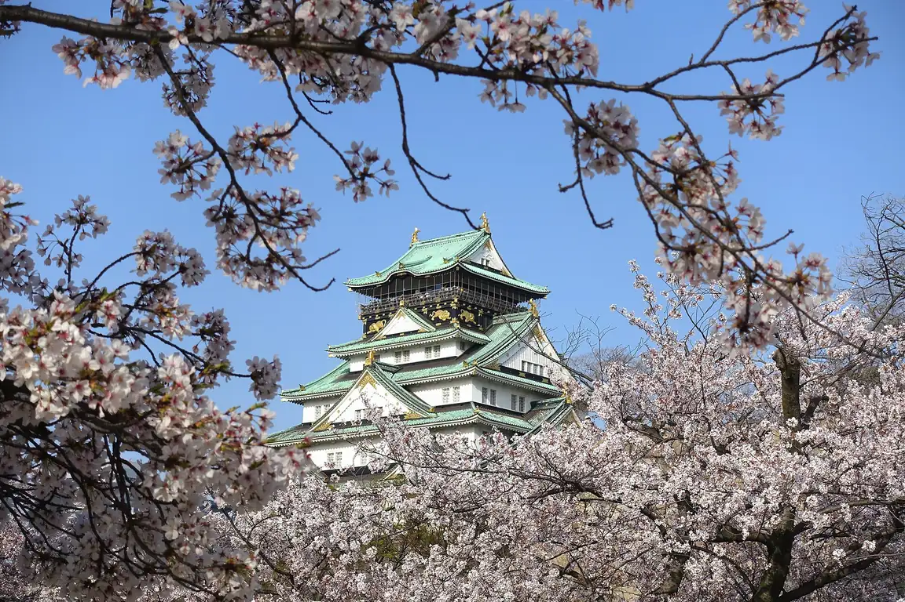
1. Osaka Castle's main tower framed by cherry blossom in springAlt: A white and green Japanese castle tower with gold trim, seen through branches of pale pink cherry blossom under a blue skyLuka Peternel · CC BY-SA 4.0 · Commons · 1152×768
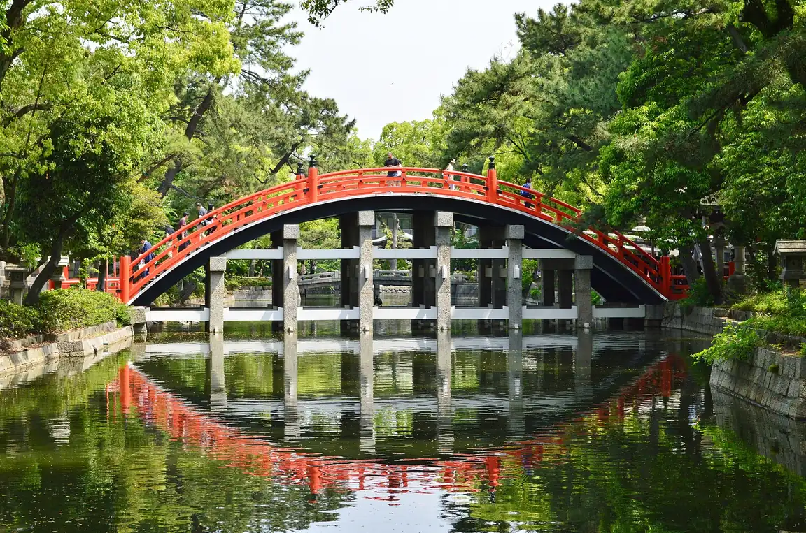
2. The arched Sorihashi bridge at Sumiyoshi Taisha, one of Japan's oldest shrinesAlt: A steeply arched red bridge on stone pillars over a still green pond, reflected in the water and framed by treesSaigen Jiro · CC0 · Commons · 1152×763
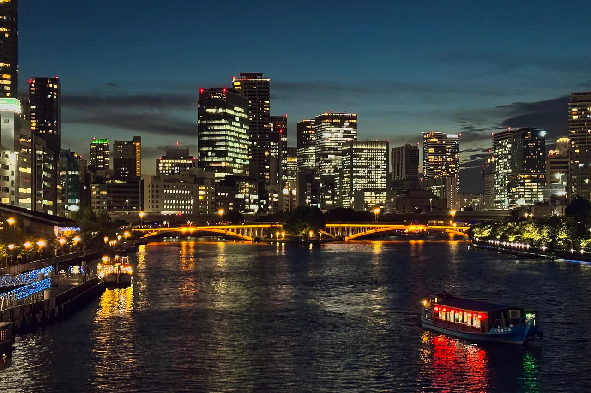
3. Office towers of Nakanoshima over the river at dusk, with a lantern-lit boatAlt: Lit high-rise buildings above a wide river at dusk, with glowing bridges and a small boat hung with red lanternsSakai Yayoi · CC0 · Commons · 1280×853
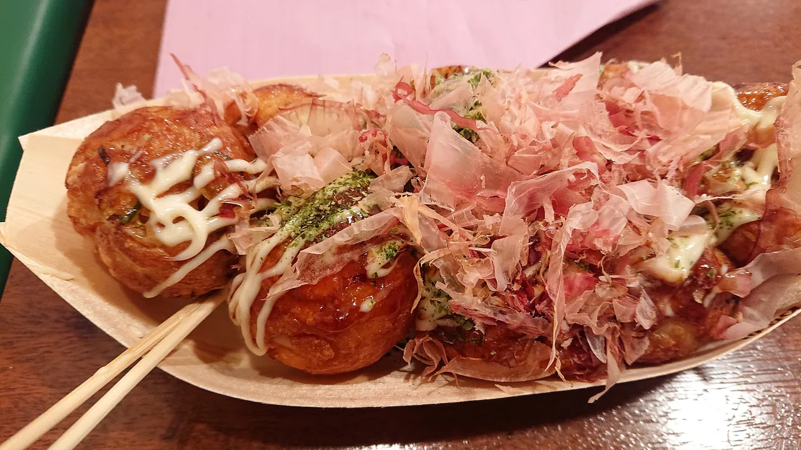
4. Takoyaki, Osaka's octopus dumplings, topped with bonito flakes and mayonnaiseAlt: A wooden boat-shaped tray of round brown dumplings drizzled with mayonnaise and heaped with pink bonito flakes, with chopsticksMiyuki Meinaka · CC BY-SA 4.0 · Commons · 1280×720
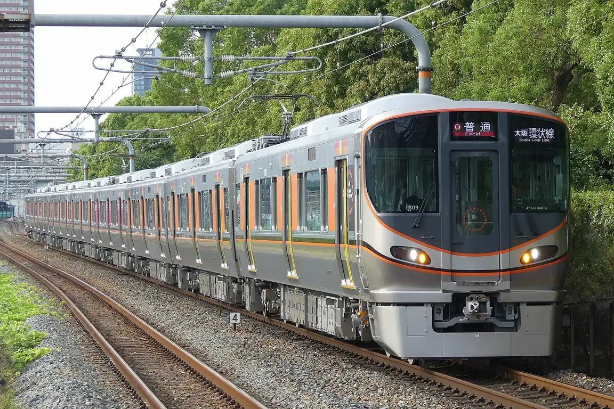
5. An Osaka Loop Line train, the circle line around the city centreAlt: A silver commuter train with orange stripes running on tracks beside trees, its destination board reading Osaka Loop LineMaedaAkihiko · CC BY-SA 4.0 · Commons · 1152×768
Seoul seoul
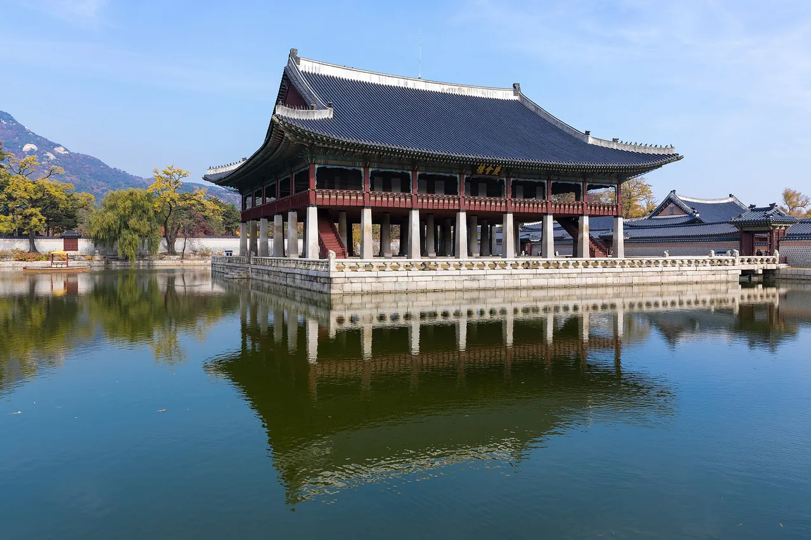
1. Gyeonghoeru, the royal banquet pavilion of Gyeongbokgung Palace, in autumnAlt: A large wooden pavilion with a dark tiled roof on stone pillars, standing in a still pond that reflects it, with autumn trees and a mountain behindFrank Schulenburg · CC BY-SA 4.0 · Commons · 1280×853
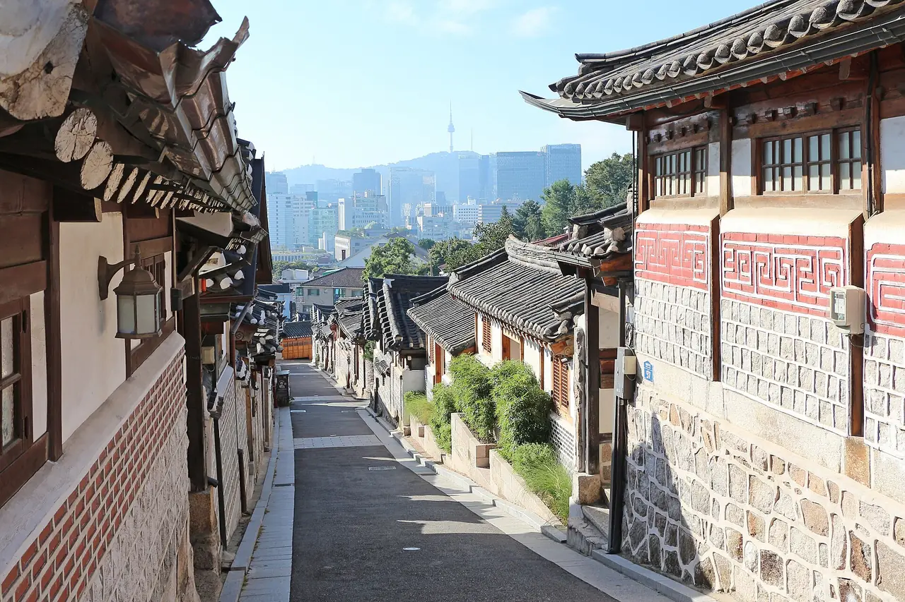
2. Traditional hanok houses in Bukchon, with N Seoul Tower on the skylineAlt: A quiet sloping lane between traditional Korean houses with curved tiled roofs, with modern towers and a hilltop tower in the distanceBgag · CC0 · Commons · 1280×853
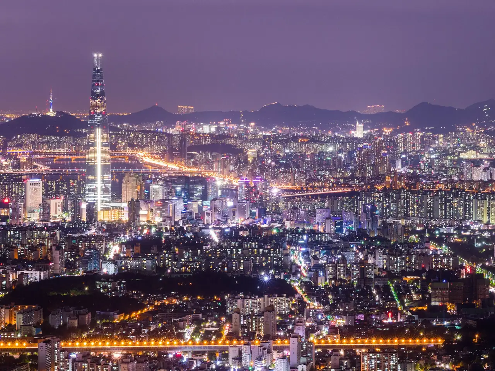
3. Seoul at night from the hills to the southeast, with Lotte World Tower and the Han River bridgesAlt: A vast night cityscape of lit apartment blocks, a very tall tapering tower on the left, bridges glowing over a river and dark mountains behindJoon Kyu Park · CC BY-SA 3.0 · Commons · 1280×960
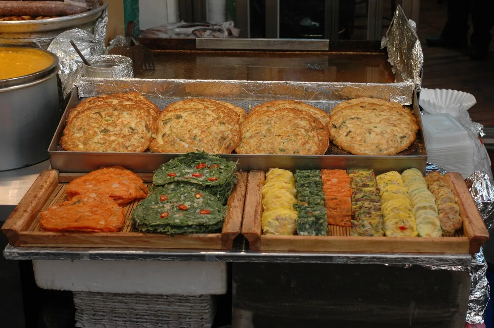
4. Jeon, Korean savoury pancakes, on a stall in Gwangjang MarketAlt: Trays of golden savoury pancakes and rows of pan-fried vegetables and fish on a market stallPfc. Bo Park, 2ID PAO, US Army · Public domain · Commons · 1280×850
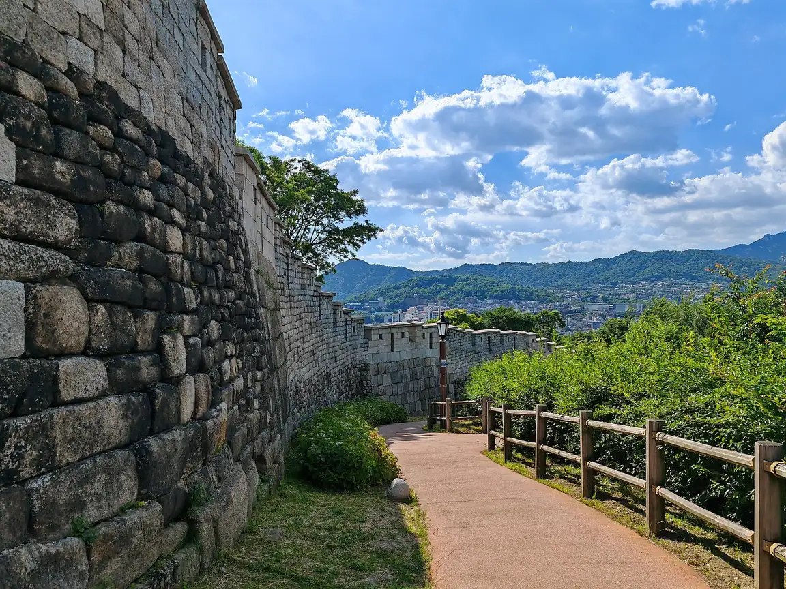
5. The walking trail along the Seoul City Wall, with the city's mountains behindAlt: A paved path beside a tall old stone wall, curving along a green hillside toward wooded mountains and rooftops under a blue skyDwxn · CC BY-SA 4.0 · Commons · 1152×864
Singapore singapore
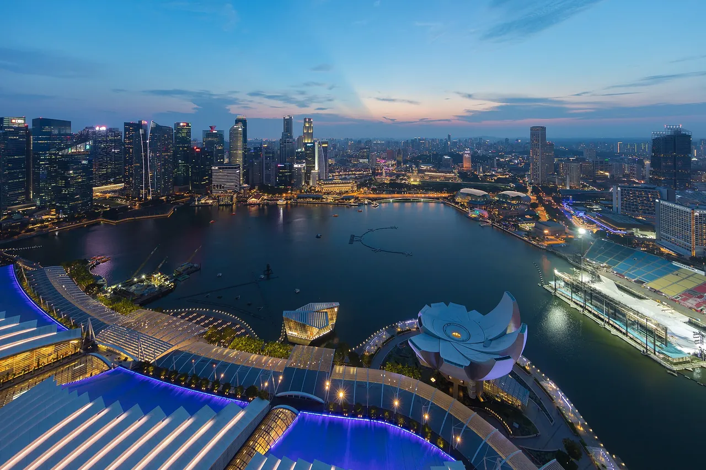
1. Marina Bay and the downtown skyline at dusk, from the top of Marina Bay SandsAlt: An aerial dusk view of a calm bay ringed by lit skyscrapers, with a lotus-shaped museum and curved glass roofs in the foregroundBasile Morin · CC BY-SA 4.0 · Commons · 1280×853
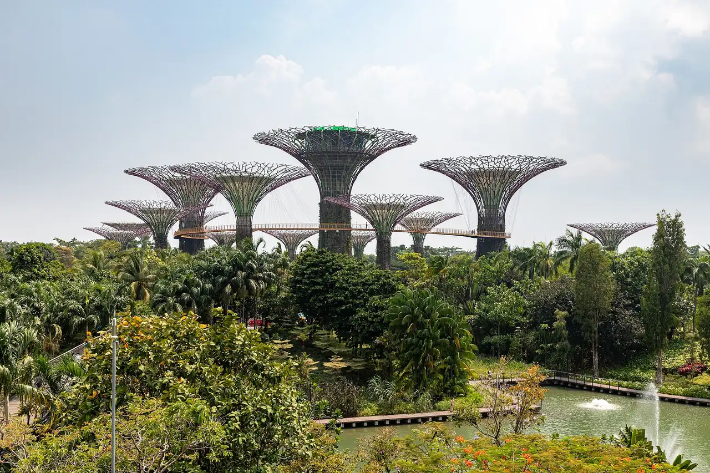
2. The Supertree Grove at Gardens by the BayAlt: Tall tree-shaped steel structures covered in plants, linked by an elevated walkway, rising above tropical gardens and a pondDietmar Rabich · CC BY-SA 4.0 · Commons · 1280×853
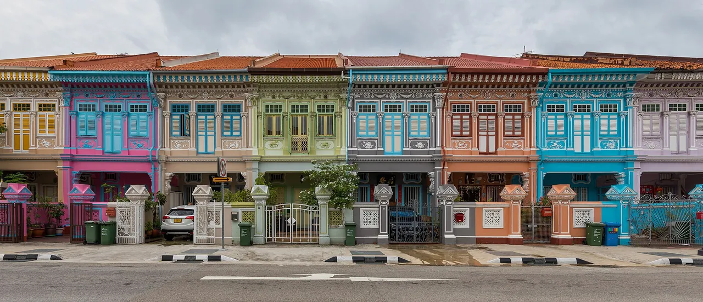
3. Pastel Peranakan terraced houses on Koon Seng Road in Joo ChiatAlt: A row of ornate two-storey terraced houses painted pink, green, blue, orange and lilac, with shuttered windows and decorated gatesBasile Morin · CC BY-SA 4.0 · Commons · 1280×551 · focus 35% 50%
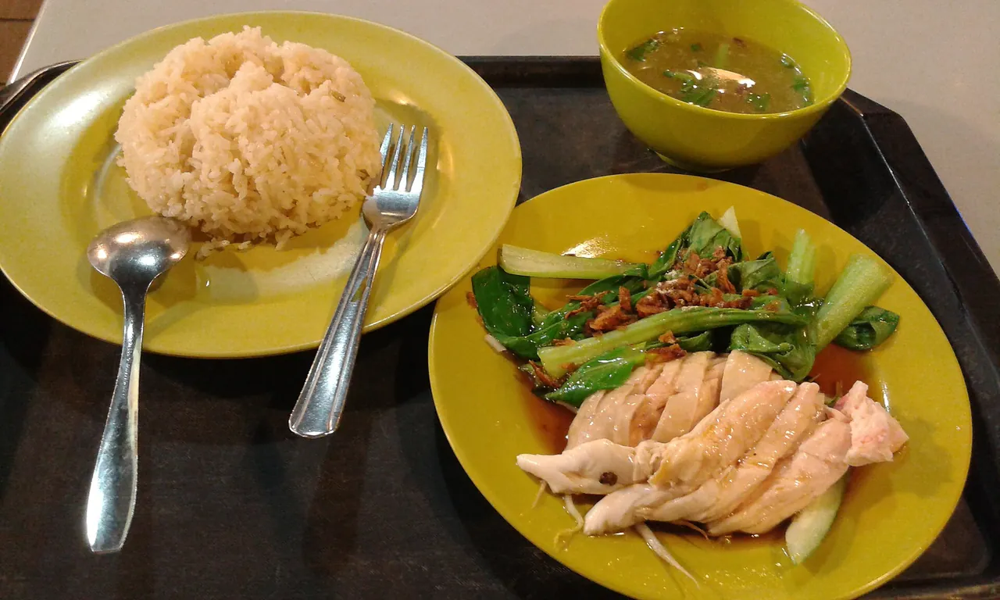
4. Hainanese chicken rice, the hawker-centre stapleAlt: A plate of fragrant rice, a plate of sliced poached chicken with greens and fried shallots, and a bowl of soup on a trayPauloleong2002 · CC BY-SA 4.0 · Commons · 1280×768
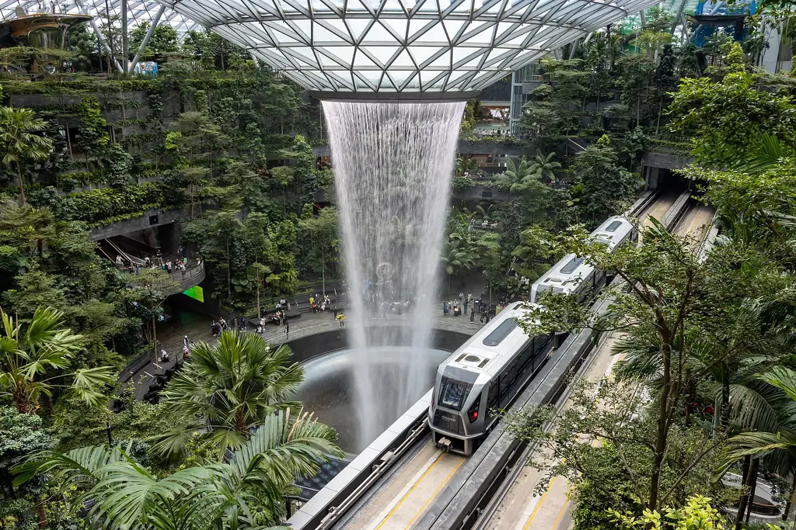
5. The Rain Vortex and Skytrain inside Jewel at Changi AirportAlt: An indoor waterfall pouring from a glass dome into a pool, surrounded by terraced tropical greenery, with a small automated train passingMike Peel · CC BY-SA 4.0 · Commons · 1024×683
Manila manila
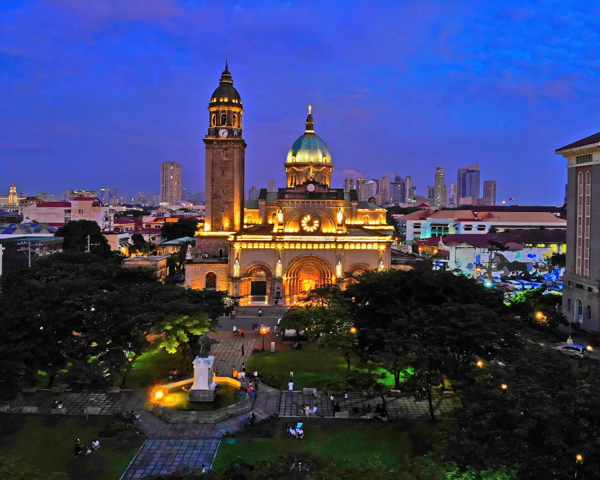
1. Manila Cathedral lit at dusk above Plaza Roma in IntramurosAlt: A floodlit stone cathedral with a bell tower and a green dome at dusk, facing a tree-lined square, with high-rises on the horizonAllan Jay Quesada · CC BY-SA 4.0 · Commons · 1280×1024
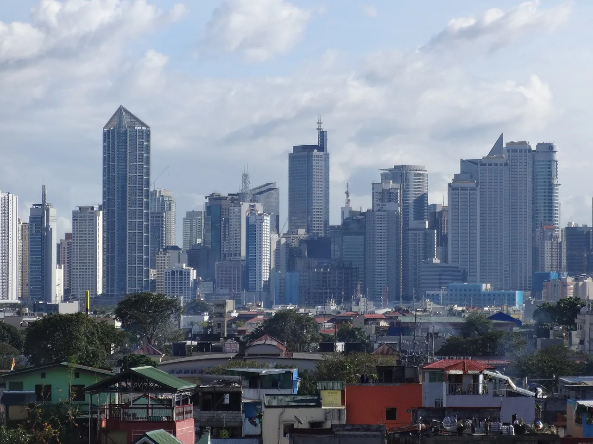
2. The towers of Makati, Metro Manila's main business districtAlt: A cluster of glass and concrete skyscrapers rising behind low rooftops and trees under a cloudy blue skypatrickroque01 · CC BY-SA 4.0 · Commons · 1280×960
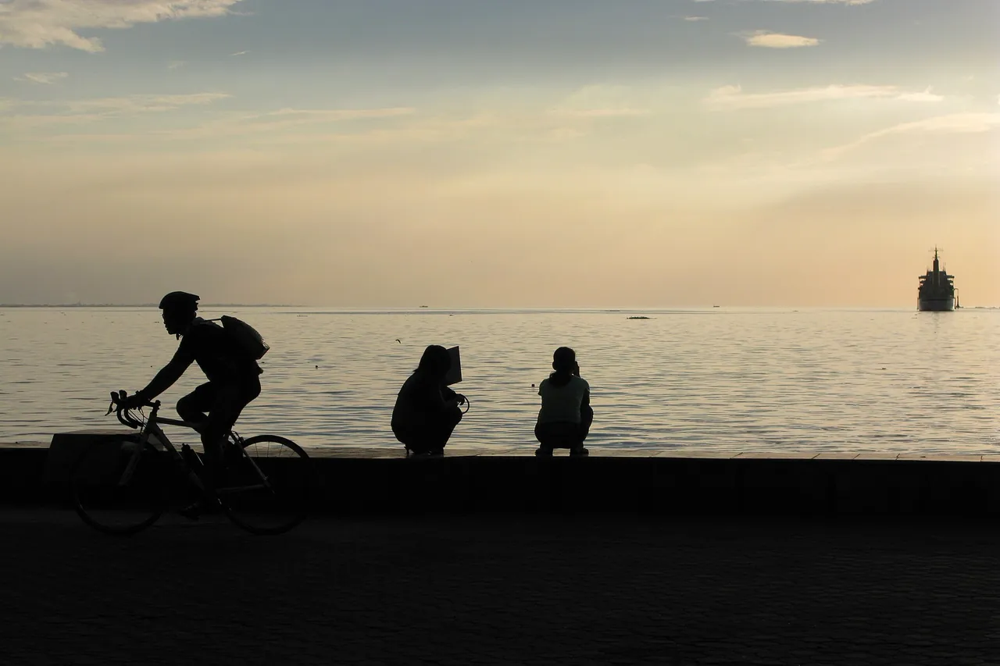
3. Evening on the Manila Bay seawall along Roxas BoulevardAlt: Silhouettes of a cyclist and two people sitting on a seawall facing a calm bay at sunset, with a ship on the horizonVyacheslav Argenberg · CC BY 4.0 · Commons · 1280×853
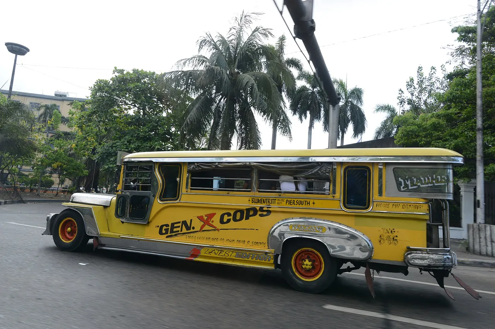
4. A jeepney, Manila's shared minibus, on the moveAlt: A long yellow jeepney with chrome fenders and red wheels driving past palm trees on a city streetJorge Láscar · CC BY 2.0 · Commons · 1280×853
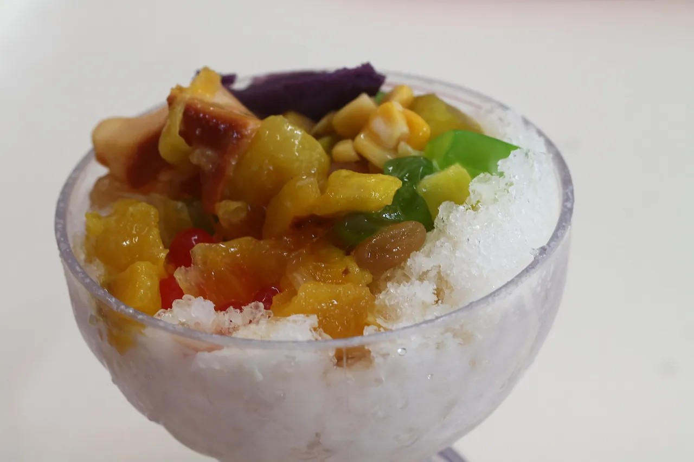
5. Halo-halo, the Filipino shaved-ice dessertAlt: A glass bowl of shaved ice topped with sweetened fruit, green jelly cubes, corn, raisins and purple yamElmer B. Domingo · CC BY-SA 4.0 · Commons · 1280×853


.jpg){kind=link}
_at_Gyeongbokgung_Palace,_Seoul.jpg){kind=link}

.jpeg){kind=link}


,_Gardens_by_the_Bay,_Supertree_Grove_--_2019_--_4752.jpg){kind=link}


.jpg){kind=link}

.jpg){kind=link}